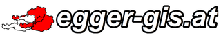

Download Bemessungsniederschlag ZEMOKOST 2.0
Nun können Sie mit aus Karte einen Punkt auswählen... Je nach TYP wird ein Downloadlink generiert.
ACHTUNG: Diese Seite dient als Fallbeispiel für eine frei zugängliche GIS-Spezialanwendung im Bereich Naturgefahrenmanagement. Die Richtigkeit der Daten kann derzeit nicht garantiert werden.
Quelle der Grundlagendaten: Copyright BMLFUW (http://ehyd.gv.at/) , Dezember 2016. Eine Aktualisierung erfolgt derzeit nicht.
Weitere Datenquellen: basemap.at + geoland.at
| Copyright: Manfred Egger, 2016: |
Datenhosting: |
|  |
|